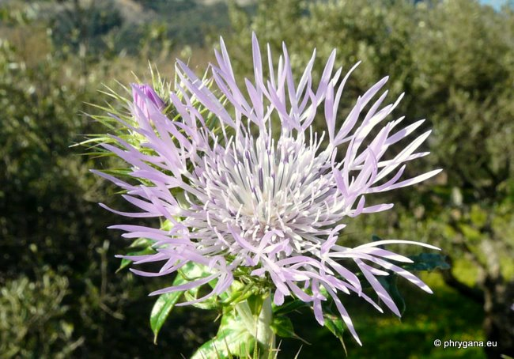

Galactites tomentosus Plakias 22 janvier 2012

Galactites tomentosus Plakias 22 janvier 2012
Galactites tomentosus Plakias 22 janvier 2012

Galactites tomentosus Plakias 22 janvier 2012
Galactites tomentosus Plakias 22 janvier 2012
| PHRYGANA | Fauna | Flora | nouveautés | liste des espèces |
contact -
info - commentaires phrygana1 (at) gmail.com |
| Particularités crétoises | Galles et mines | ressources naturelles |
| Galactites tomentosus MOENCH |
| 316 | Flora | ASTERACEAE | Cardueae | Galactites Moench |
|
Galactites tomentosus Plakias 22 janvier 2012 |
| fr: le Chardon tomenteux, le Galactite cotonneux en: Boar Thistle | |
| Feuilles: verdâtres, glabres et tachées de blanc sur la face supérieure, blanches et tomenteuses sur la face inférieure, sessiles, lancéolées étroites, pennipartites à segments épineux (épines longues de 2 - 6 mm), lancéolés | |
| Plante rameuse au sommet, tomenteuse | |
| Fleurs: capitules (15 - 20 mm), solitaires ou en petits groupes pédonculés rose purpurin à rose très pâle, avec des fleurs ligulées extérieures profondément découpées, un peu étalées, stériles; fleurs intérieures hermaphropdites; bractées droites, dressées avec un bout court épineux | |
| Fruits: akènes (3 x 5 mm), brun jaunâtre, glabres; pappus longs de 10 -15 mm | |
| Hauteur: 15 - 100 cm | Type biologique: hémicryptophyte bisannuel |
| Floraison: janvier février mars avril mai | |
| Altitudes: 1 – 650 m | |
| Statut en Crète: indigène | |
| Biotopes en Crète: bords des routes, terrains vagues, champs abandonnés, pelouses. | |
| Distribution: région Méditerranéenne européenne, Afrique du nord | |
| Usage culinaire en Crète: les jeunes pousses sont pelées et consommées crues en salade | |
|
Galactites tomentosus Plakias 22 janvier 2012 |
|
Galactites tomentosus Plakias 22 janvier 2012 |
|
 Galactites tomentosus Plakias 22 janvier 2012 |
| Galactites tomentosus Plakias 22 janvier 2012 |
|
Galactites tomentosus Plakias 22 janvier 2012 |
| 08 février 2012 |
| © paul fontaine -- © Phrygana.eu 2007 -- 2013 |